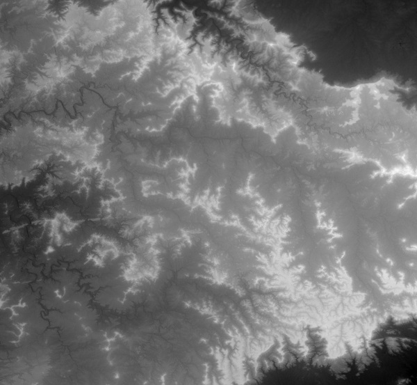

Nihav Jain | Msc.(Tech.) Information Systems | BITS Pilani |
About
Hi, I am Nihav Jain, a 4th year under-graduate pursuing Msc.(Tech.) Information Systems from Birla Institute of Technology and Science, Pilani - Pilani Campus.
I am a passionate game developer, a workaholic, and an avid Star Wars fan. My knack for software development has led me far into the programming world.........
Interests - Game Development, Mobile App Development
BITS Pilani
Birla Institute of Technology and Science, Pilani, a deemed university established in 1964, is India's topmost private engineering institute for undergraduate education.
Msc.(Tech.) Information Systems : 2011 - 2015(expected)
This is a 4-year undergraduate course offered by the institute in equivalence to the B.E.(Hons.) Computer Science degree. The programme equips students with comprehensive skills on computer software and software engineering techniques, both at the conceptual and application levels.
Courses -
Computer Programming
Logic in Computer Science
Discrete Structures for Computer Science
Object Oriented Programming & Design
Data Structures & Algorithms
Design & Analysis of Algorithms
Digital Electronics and Microprocessors
Computer Organization
Operating Systems
Principles of Programming Language
Compiler Design
Computer Networks
Software Engineering
Software Testing
Database Systems & Applications
Computer Graphics
Multimedia Computing
Number Theory
Maths I
Maths II
Maths III - Differential Equations
Probability and Statistics
Seth M.R. Jaipuria
Seth M.R. Jaipuria School, Lucknow is an English medium school for Primary, Secondary and Higher Secondary education. It prepares students for the Indian Certificate of Secondary Education (ICSE - Year 10) and the Indian School Certificate (ISC - Year 12) Examinations. The School ranked 9th among the top schools of the country according to IMRB International Survey.
My Academic Results -
Class
Specialization
Board
% marks
Year
XII
Science
ISC
93%
2011
X
General
ICSE
95.8%
2009
Skills
C / C++ / C#
Java
Actionscript 3.0
Python
Android App Developement
iOS App Developement
Windows Phone App Development
HTML
CSS
Javascript
PHP
SQL
Box2D Physics Engine(AS3, C++)
Starling Framework (AS3)
Away3d (AS3)
Google App Scripts
Facebook SDK (PHP)
Adobe Flash
Adobe Photoshop
Eclipse
NetBeans
XCode
Visual Studio
Games
Till now I have made 3 games, namely Pacman : The Elements, Lacuna 2013 and Lacuna 2012. The Elements is a modified version of the legendary game of Pacman whereas both versions of Lacuna are an online treasure hunt game with 5 levels each.
Pacman : The Elements
Lacuna 2013
Lacuna 2013
Lacuna 2012
Lacuna 2012
Under-Graduate Projects
Herein I have listed all the projects I did as part of some or the other coursework while studying in BITS Pilani.
EAttend@BITS Pilani
Guide: Prof. Rahul Banerjee
This is an Android application developed by the SDET Unit, BITS Pilani, under the guidance of Prof. Rahu Banerjee, for marking the attendance of students via face recognition.
1.Worked on the face recognition algorithm for marking the attendance. 2.Integrated the face recognition module with the Android application 3.Integrated the face recognition module with the PHP based backend for storing the attendance results.
Compiler Design
Compiler Construction in C for given language specifications
Software Testing
Summary of a research paper
Real-time Rendering of Animated Motion through Clouds
Multimedia Computing
Guide: Dr. Mukesh Kr. Rohil
Clouds or the sky forms an important part of the background in many graphics projects like games and movies. Generating life like clouds is a problem which can be looked at by many different outlooks. When the clouds are in the background or there is hardly any motion relative though them it becomes simpler to solve.
Generating them over in 3D when we need the clouds to have some volume is slightly difficult. Though we can still create them using volumetric shading in Maya. This procedure increases the render time and it cannot be used for real-time rendering for when using it in games or for interactive visual media.
This project uses texture swatching for efficient real-time rendering of the clouds.
Texture Swatches -
Using texture swatches as the skin for 3D objects and rendering them in real time is a very efficient and age old technique. It uses mip maps to store the pre-preprocessed data for the various transformations the texture can undergo. Since these textures are used as a swatch i.e. the same texture is used as a repeated pattern for majority of the 3D scene, the processing as well as memory used in storing the required data is very less. The parallelization of the GPU really comes to work here as each core picks up one instance of the swatch and applies the required transformation values to it by using the mip maps as a lookup table. The cut-down on the calculation part compensates for the large number of textures used in the scene.
I have implemented the proposed solution in Actionscript 3.0 on the Stage3D framework using the Away3D graphics library.
The Stage3D framework in Adobe Flash offers a fully hardware-accelerated architecture. This set of low-level GPU-accelerated APIs provide developers with the flexibility to leverage GPU hardware acceleration for significant performance gains in video and game development.
Starting with a hardware accelerated framework as base, I setup the 3D scene and positioned the camera at an appropriate distance.
The FogMethod is an additional optimization which renders objects which lie only within a certain range of distance.
Enabling mip mapping for the texture (line 98) is a very essential part of optimization as this step ensures the pre-processing of transformation matrices for the texture in use.
//setup the view _view = new View3D(); addChild(_view);
//setup the camera _view.camera.z = -1000; _view.camera.y = 100; _view.camera.lookAt(new Vector3D());
var bmpd:BitmapData = new BitmapData(32, 32, false, 0x326696); _view.background = new BitmapTexture(bmpd);
//setup the scene _fog = new FogMethod( -100, 3000, 0x4584b4);
var texture:TextureMaterial = new TextureMaterial(Cast.bitmapTexture(cloudBitmap)); texture.alphaBlending = true; texture.mipmap = true; texture.addMethod(_fog);
Now that the setup of the scene is done and all the required items have been initialized, I added 800 texturized planes with random x, y, z, horizontal/vertical scale and rotation values.
Mouse movement functionality ensures a restricted yet smooth motion through the clouds.
In this project I have implemented a system for real-time simulation and rendering of realistic, clouds suitable for interactive applications such as flight simulators and games. These applications demand realism, but they cannot afford to sacrifice speed to achieve it. The algorithms and techniques applied here were developed with these requirements in mind. These algorithms are not only efficient; they also provide ways to trade quality for performance, and to amortize computation over many rendering frames in order to preserve high frame rates.
The performance delivered for the process applied above, as observed by the stat sheet on the top left corner of the demo, tells us that the frame rate is always close to 60 frames per second, never dipping below 45 f.p.s.
BITS Online Notice Board
Android app used to mark attendance of students via face recognition
Point to point processing of digital images using parallel computing
Android app used to mark attendance of students via face recognition
Music Library
Android app used to mark attendance of students via face recognition
Department of Visual Media / CCTV
Nihav Jain
Oasis 2012 : The Reinvention
Main site
Oasis 2012 : The Reinvention - Intro
Intro site
Oasis 2013 : The Elements - Android App
Nihav Jain
APOGEE 2014 - Android App
Nihav Jain
Aarohan : Brainiac
Nihav Jain
ACM Student Chapter, BITS Pilani
Nihav Jain
Checkmate
Nihav Jain
Code Enigma
Nihav Jain
Internet Whirlwind
Nihav Jain
Stock Market Simulation
Nihav Jain
Personal Projects
Nihav Jain
BISAG
Project Description: DEM Profile Generator is a utility to facilitate the use of spatial and geo-spatial technologies. It generates graphs of the height variations on the terrain as well as a map of instrumentally derived seismic intensities. These maps provide a representation of the extent of damage following an earthquake. They can be used for emergency response, loss estimation, and for public information through the media.
For example, maps of shaking intensity can be combined with databases of inventories of buildings and lifelines to rapidly produce maps of estimated damage.
Using an input Geo-TIFF image as a height map, we generate an image presenting the 3D visualization of the earth's terrain. Also, if the user inputs the parameters of an earthquake (latitude-longitude of the epicenter, depth of origin and magnitude in Richter scale), we generate the corresponding shake map, clearly representing the danger levels using appropriate colors.
Tools Used - Java, Java Advanced Imaging library, jChart2d library for graph plotting, NetBeans IDE
DEM - A Digital Elevation Model is a digital model or 3D representation of a terrain's surface.
Shake Map - A map showing ground movement and shaking intensity following major earthquakes.
GeoTIFF - It is a public domain metadata standard which allows geo-referencing information to be embedded within a TIFF file.
Process -
1. Reading the Geo-TIFF in Java - The TIFF format, not being one of common image file formats like JPEGs and PNGs, cannot be directly loaded/read by the native classes of Java. We, therefore, use the Java Advanced Imaging (JAI) library to read the input TIFF image and extract relevant information from it.
Unlike the common image file formats, the individual pixel values in a Geo-TIFF do not represent the pixel color. They, in fact, represent the height of that particular land piece in meters above sea level. Using the RenderedOp class of JAI, we get to know the highest and lowest height values in the given file. Using this information, we scale down the pixel values to the range of 0-255, thus making it possible for us to display the TIFF file like any other image format.
Here is the code-snippet to read a Geo-TIFF and convert it to a BufferedImage and Image object of Java -
This is the resultant image after the above operations. The "whiter" the pixel, the more is its height above sea level and vice-versa.

2. Bump Mapping for 3D Visualization of Earth's terrain - The current image appears to be flat because we look at it right from the top. We need to look at it from a certain angle in order to get a proper 3D perception of the terrain. We take a light source at a point (2*width, height, 30) w.r.t. the image. We now need to take the dot product of light vector with the normal vector of a given pixel. This dot product gives us the intensity of light reflected by that pixel. We take A(x-1, y), B(x+1, y) and C(x, y-1), D(x, y+1) in the same plane. The normal vector of a pixel (x, y) is calculated by taking the cross product of AB and CD.
The following code snippet calculates the normal vector of each pixel -
int[] arr=new int[1]; for (int x = 1; x < img_width - 1; x++) { for (int y = 1; y < img_height - 1; y++) {
Now that we have our bump map with the light intensities, we can assign any color scheme to this map, be it according to the height or according to the seismic intensities.
The color to be allotted should be calculated normally and then multiplied by the intensity value to get the reflected color. Presented is the map colored according to various height ranges in the map.